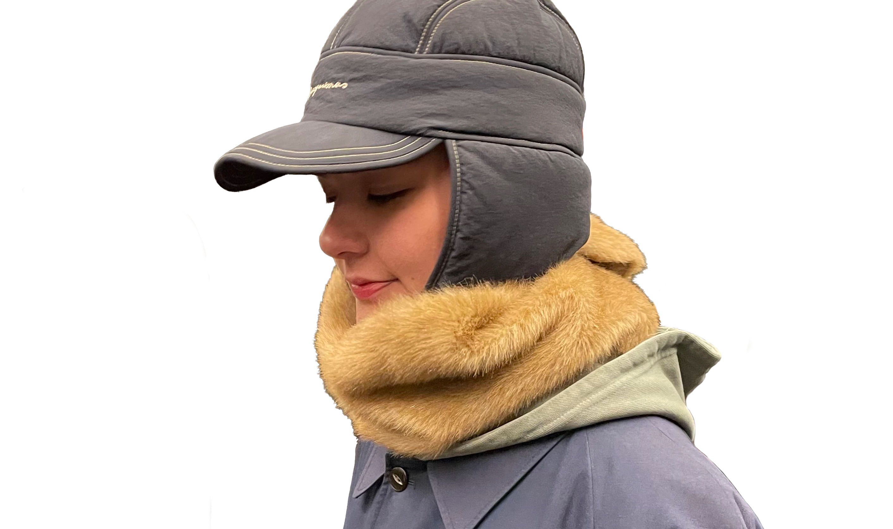
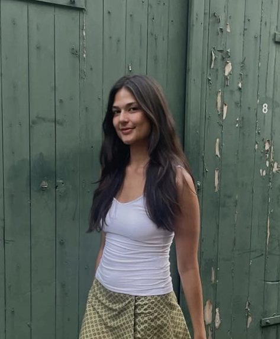

PORTFOLIO
A technically creative student passionate about
coding, web design, and graphic work.
coding, web design, and graphic work.
Gabrielle Cernias Mikkelsen
Multimediadesigner


I am currently studying Multimedia Design at Erhvervsakademi København, specializing in Front-End
Development. I am
particularly passionate about front-end as it allows me to combine creativity with programming to
create
functional and
engaging digital experiences. Through my studies, I work with HTML, CSS, JavaScript, and modern
development workflows to
transform design concepts into responsive and user-friendly websites. I enjoy the process of turning
visual ideas into interactive solutions and continuously developing my
technical skills
through case projects and hands-on development work.
Alongside my digital practice, creativity plays an important role in how I approach problem-solving.
My
background in
sewing and running an independent tailoring service has strengthened my eye for detail, structure,
and
aesthetics -
skills I actively bring into my work as a front-end developer. Working with clothing customization
and
upcycled
materials has also shaped my sustainable and thoughtful approach to design, both physically and
digitally.
Through my studies in Multimedia Design, I have developed practical skills in web development, design tools, and UX/UI principles. The school projects presented below are selected group projects that highlight my competencies within UX/UI design, front-end development, and JavaScript. Working collaboratively on these cases has given me hands-on experience with coding, digital design, and user-centered solutions, strengthening my ability to transform ideas into functional and visually engaging digital products. Click to explore*
At Vester Kopi, I work closely with customers to develop print solutions tailored to their needs, including posters, stickers, flyers, and books. I guide clients throughout the entire process from idea to final production. I advise on both technical and visual decisions. This role has strengthened my ability to understand user needs, communicate design solutions clearly, and balance aesthetics with technical requirements. Working in a fast-paced environment has also improved my problem-solving skills and attention to detail. Both competencies I actively apply in my front-end development work.
Through my independent tailoring service, Gabzfixbix, I independently manage client projects from concept to final delivery, customizing and redesigning garments based on individual requests. Running my own service has strengthened my ability to plan workflows, manage multiple projects simultaneously, and make independent design and technical decisions. The work requires experimentation, precision, and iterative problem-solving. It's an approach I bring into my front-end development process when refining and improving digital solutions